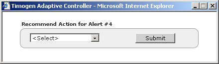

Timogen Web Site
Voice: (650) 903-9888
Fax: (650) 903-9327
info@timogen.coms
Recommending Action for an Alert
When an alert is generated, Timogen Adaptive Controller selects a default recommended action to resolve the alert. A alert resolver has the option to recommend a different action.
To recommend an action for an alert1 View the detail page of the alert you want to recommend an action for. (See "Viewing Alerts".)2 Click Recommend Action. The Recommend Action dialog box appears.3 In the drop-down list box, select an action. Choose from:· Move In Supply· Increase Supply· Reduce Production· Push Out Supply· Push Out Demand· Discretionary· Reduce Demand· Increase Production· Move In Production· Push Out Production4 Click Submit.
|
|
Timogen Systems Timogen Web Site Voice: (650) 903-9888 Fax: (650) 903-9327 info@timogen.coms |